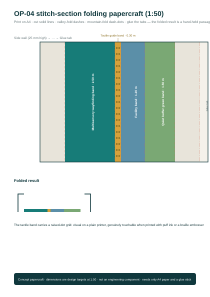
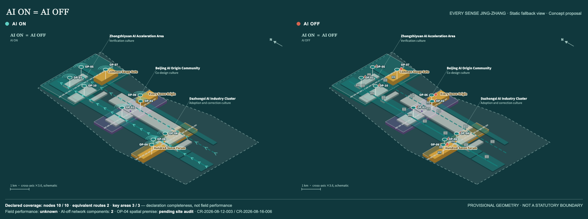

{kind=link}
site_area_sqmReviewer's path · the essentials in eight minutesOne route for reviewers and fast readers; everything works offline and every command reproduces inside this package
- Core proposition (1 min): AI ON = AI OFF — services must stay equivalent. The opening chapter of the bilingual report states the test and the three metrics.
- Four drawing volumes (2 min): A0 boards for the spatial frame and criteria, A3 booklet for page-by-page judgement cards (A0 ZH · A3 ZH).
- One film and bilingual audio (2 min): the 60-second film and the Chinese/English voice guides (with synchronised captions) live in
assets/media/— all synthetic speech, no human recording. - Reproduce SEB yourself (1 min): run
node seb-tabletop-run.js(forty fixtures) andnode seb-op04-chain-run.js(evidence-chain replay) insidevisual/assets/; the baseline is granted under CC BY-SA 4.0 with two external adoptions on record. - Rights and honest boundaries (1 min): the per-asset rights ledger covers every registered file, with a signed warranty and its stated limits; the seven inclusion metrics stay unknown rather than estimated.
- Implementation (1 min): the phasing chapter sets out the six levels L0–L4b, gates G0–G3 and a ninety-day starter package; real pilots start only after an authorising body confirms.
- Touch it, hear it (2 min): the folding papercraft and 3D tactile map (
assets/tactile/·visual/assets/op04-tactile-map.json) hand the break to the fingertips — view the papercraft · download SVG (A4 print); the bilingual Audible Break and the 65-second Dual-State Walk live inassets/media/— the silence is the break, and passage continues after the light goes out.
- Interactive experience (this page): the ten independent-completion nodes below switch between AI ON and AI OFF, fully keyboard reachable.
CORE METRICS + SCENE SNAPSHOTRecomputed from the same source as metrics.json; formulas, sources and evidence in chapter 10
building_footprint_area_sqmgreen_ratiopublic_space_ratioscenario_card_countop_node_countChapter 16 lets you flip the AI switch and check the readouts yourselfSame spine, same ten independent-completion nodes: declared node coverage 10 / 10 · 2 equivalent routes · 3 / 3 key areas — only the channel changes. These are declaration-completeness figures; field performance: not authorized · not field-run, AI-off network components 2, OP-04 premise pending field audit. Go to chapter 16 “Interactive scene” →

THE PUBLIC BASELINE IS INDEPENDENT COMPLETION
Urban intelligence is measured by whether anyone can understand, choose, complete and exit the same public service.
Equivalence is the service floor this proposal commits to; the gap is the audit target where that commitment has not yet been met, not a claim that the standard is already met. The equals sign states a target equivalence of service outcomes; it does not say that current spatial coverage is already equivalent.
THREE SCOPE LAYERS
All drawings are concept proposals; provisional geometry is not a statutory boundary, engineering alignment or approved implementation.
OVERVIEW MAP + OVERALL STRUCTURE
All drawings are concept proposals; provisional geometry is not a statutory boundary, engineering alignment or approved implementation.
![Plate “EVERY SENSE JING-ZHANG: ONE CITY, MANY WAYS TO COMPLETE”: overall structure map of the Jing-Zhang corridor showing the universal access baseline, the low-stimulation alternative route, the three key-area outlines, the ten numbered independent-completion nodes and the relation of the Zhongguancun service wing and the Xiaoyue River scenario wing, on a plain-ground vector base (no OSM background since v6.4); the bounded OSM snapshot serves as the fabric-readings data source, registered under ODbL.](../assets/figures/site-overview.en.png)
![Concept scene plate “Corridor aerial: one baseline through real Beijing, every landmark in place”: viewpoint about 500 m above the Wudaokou section facing south, with CITIC Tower and CWTC III, the Central TV Tower, Beijing North Station and Xizhimen, Dazhongsi, Zhongguancun and the Western Hills with bearings and distances computed from real coordinates in the generation prompt (coordinate table in the provenance record), and the baseline reading as one continuous ribbon with node canopies recurring along it. Landmark forms and city fabric are AI-generated concept imagery, not a survey reconstruction.](../assets/figures/scene-corridor-aerial.en.webp)
LAND-USE ZONES, CONCEPTUAL FUNCTIONS + RENEWAL PROJECTS
All drawings are concept proposals; provisional geometry is not a statutory boundary, engineering alignment or approved implementation.

HUMAN-SCALE OPERATING CONTRACTS FOR THREE KEY AREAS
All drawings are concept proposals; provisional geometry is not a statutory boundary, engineering alignment or approved implementation.
![Plate “Each key area signs an operating contract: when it must stop, and what lets it resume”: three cards for the Zhongzhi Park universal-interface lab, the AI Origin Community independent-living co-design house and the Dazhongsi inclusive adoption market, each with a ground-floor operating diagram, the equivalent-route band held within one line of sight, and STOP / RESUME clauses; the three diagrams place their nodes at the true relative positions of the constraints.geojson concept points (per-card N arrow), and the Dazhongsi card marks the OP-04 break on the direct line, pointing to the detail plate.](../assets/figures/key-areas.en.png)


MOBILITY, BLUE-GREEN PUBLIC SPACE + AI SCENARIOS
All drawings are concept proposals; provisional geometry is not a statutory boundary, engineering alignment or approved implementation.

![Plate 'One plan, two states: the difference only in the removable overlay': sheet A with AI on above sheet B with AI off, the two bases pixel-identical; dynamic wayfinding, sensing and the flowing-light guide turn grey in place on sheet B while the tactile band, engraved wayfinding, staffed help points and cash counters are designed to stay available by default; with a what-goes/what-stays ledger and the ruling 'What stops is the AI layer, not the service'. AI overlay elements are indicative concept positions, not an equipment layout plan.](../assets/figures/dual-state-plan.en.png)
![Concept scene plate “Dual state, side by side: the universal access baseline, AI on = AI off”: one viewpoint split down the centre seam, light guidance live on the left and every system down on the right; the same elderly cane user, wheelchair user and child cyclist complete the same journey in both states, with the tactile band, engraved wayfinding wall and staffed help point present in both. The two-state equivalence gap stays unknown pending paired field measurement. AI-generated concept imagery.](../assets/figures/scene-dual-state.en.webp)

Equivalence is the service floor this proposal commits to; the gap is the audit target where that commitment has not yet been met, not a claim that the standard is already met. The gap shown here — 225,058 sqm, 46.67% of the AI-on domain — marks what is still waiting for a field audit; it is not evidence that coverage is already equivalent. This figure uses the full-network radius convention, measuring the shrinkage of the guidance range; the chain replay of the OP-04 chapter uses the fixed-interface convention, judging whether an equivalent route exists — the two conventions stand side by side and their figures must not be converted into one another.
TEN INDEPENDENT-COMPLETION NODES
All drawings are concept proposals; provisional geometry is not a statutory boundary, engineering alignment or approved implementation.
TASK COVERAGE + THE RIGHT TO STOP
S01, S05 and S08 bind owner, stop, recovery and evidence before testing.
CORE METRICS + RECOMPUTATION EVIDENCE
Package-consistency recomputation, not statutory or official precision.
site_area_sqmbuilding_footprint_area_sqmgreen_ratiopublic_space_ratiokey_area_countop_node_countscenario_card_countwork_package_countpersona_countlandmark_countinternational_case_count
SEVEN PERFORMANCE TEST FAMILIES
Unknown is not zero; no outcome is claimed without real participants and a protocol.
BRAND, CULTURE, AND INTERNATIONAL COMMUNICATION
Visual grammar, cultural narrative and outward communication share one public commitment; marks, landmark names, events and communication plans are concept proposals.
Colour never carries information alone: any colour-coded state must also carry shape, text or tactile redundancy.

The same public commitment can be tested by hand in Chapter 16, Interactive scene: switch AI on or off and the declared node-coverage readout for the ten nodes stays the same.
SOURCES + VERSION LOCATORS
Key sources show URL/path and access date; OSM remains background only.
- OSM-BACKGROUND-CONTEXT-20260810OpenStreetMap public background context (Overpass snapshot, 2026-08-10)https://www.openstreetmap.org/copyright · 2026-08-10
- OFFICIAL-ANNOUNCEMENTOfficial announcement tasks, scope levels, key areas, language, and deliverable context.https://ghzrzyw.beijing.gov.cn/zhengwuxinxi/tzgg/hd/202605/t20260509_4643047.html · repository snapshot
- ACCESSIBILITY-LAW-CN中华人民共和国无障碍环境建设法https://www.gov.cn/yaowen/liebiao/202306/content_6888910.htm · 2026-08-09
- W3C-ACCESSIBILITY-PRINCIPLESAccessibility Principleshttps://www.w3.org/WAI/fundamentals/accessibility-principles/ · 2026-08-10
- WHO-DISABILITY-HEALTHDisability and healthhttps://www.who.int/news-room/fact-sheets/detail/disability-and-health · 2026-08-10
- CASE-CORNELL-TECHCornell Tech Practice and Impacthttps://tech.cornell.edu/education/practice/ · 2026-08-10
- CASE-CETRANCentre of Excellence for Testing and Research of Autonomous Vehicles - NTUhttps://www.ntu.edu.sg/erian/research-capabilities/centre-of-excellence-for-testing-research-of-autonomous-vehicles-ntu · 2026-08-10
- CASE-BARCELONA-URBAN-LABBarcelona Urban Labhttps://bcnroc.ajuntament.barcelona.cat/jspui/handle/11703/90090 · 2026-08-10
ASSUMPTIONS + DATA TRIGGERS
All drawings are concept proposals; provisional geometry is not a statutory boundary, engineering alignment or approved implementation.
RISK, SELF-CHECK STATUS + ANTI-FAILURE LOOP
Risk enters G0–G3; a G3 review records one of four outcomes: pass, conditional pass, return for rework, or close the AI layer and retain the service.
INTERACTIVE SCENE: AI ON = AI OFF
The first fifteen chapters state the commitment; this chapter hands it to reviewers and the public to test. Switch AI on or off: the same spine, the same ten nodes, the same declared node-coverage readout. Only the channel for completing the task changes. A second dimension is the time of day — morning peak, daytime, evening, night — orthogonal to the AI switch: it changes the lighting key of the picture and the description of that period only, and because lighting is a baseline service the night halos appear in both states. All drawings are concept proposals; provisional geometry is not a statutory boundary, engineering alignment or approved implementation.
Equivalence is the service floor this proposal commits to; the gap is the audit target where that commitment has not yet been met, not a claim that the standard is already met. The readings in this chapter state the proposal's own target caliber, not measured coverage on the ground.
DaytimeDaytime: visitors and counter services reach their peak, so interpretation, transaction and handover requests cluster at the ten nodes; the two equivalent routes and the ten nodes keep the same completion procedure.
Preparing the scene…
NODE-COVERAGE READOUT (DECLARED VS MEASURED)
- Declared independent-completion nodes (declaration completeness)
- 10 / 10
- Equivalent routes (declared)
- 2
- Key-area coverage (declared)
- 3 / 3
- Field performance
- unknown (unmeasured)
- AI-off network components (computed from submitted geometry)
- 2
- OP-04 spatial premise
- pending site audit · CR-2026-08-12-003
Switching AI on or off leaves the three declared figures unchanged; the last three rows are the current evidence state, listed separately from the declaration and never to be read together as achieved performance. Only the channel for completing the same task changes.
- Key area
- AI-ON channel
- AI-OFF channel
- Human handover
Click a node in the scene, or Tab to a node button below and press Enter, to open its scenario card. Press Esc to close it.
TEN INDEPENDENT-COMPLETION NODES
Spine · universal-access baseline
One of two equivalent routes, continuous in both states
One of two equivalent routes, continuous in both states
Low-stimulation quiet alternative
Dashed; the second equivalent route
Dashed; the second equivalent route
Independent-completion nodes OP-01—OP-10
Position and declared coverage unchanged in both states
Position and declared coverage unchanged in both states
Staffed help point
Shown only with AI off; coral is reserved for handover and help
Shown only with AI off; coral is reserved for handover and help
Cultural landmarks
Common Gauge Gate / Every Sense Origin / Hundred-Sense Forum
Common Gauge Gate / Every Sense Origin / Hundred-Sense Forum
Provisional key areas and overall scope
Dashed edges mean non-statutory boundaries
Dashed edges mean non-statutory boundaries
The scene is built locally from geometry/*.geojson into assets/scene-data.js using a local plane projection. For legibility the cross-spine (east-west) axis is exaggerated about 3.6 times; the north-south 1 km scale bar is drawn on the picture. The page runs fully offline and loads no remote script, font, tile or analytics. The four periods are a presentation and narrative dimension: they change the lighting key and the description text only, never the geometry, node positions, reachability or any readout, and the static fallback image does not change with the period. The readout is a design commitment, not a measured result; real conclusions require participant testing.
THREE-DIMENSIONAL SPINE: SPATIAL RELATIONSHIPS AND THE DAY
The same geometry, read in another dimension. This chapter lifts the flat scene of chapter 16: ground plate, raised road bands, green and public slabs, three key-area volumes, ten node columns with numbered plates — all extruded in the browser at run time from assets/scene-data.js, the local pre-processing product of geometry/*.geojson. Not a single coordinate is written by hand. The AI switch and the day/night switch are independent; choose a node button and the camera moves to that node.
The volumes are schematic extrusions made for reading spatial relationships. They do not represent a building design, storey count, massing control or height indicator, and the provisional geometry is not a statutory boundary, an engineering alignment or an approved implementation. This chapter produces no new readings; the node-coverage caliber remains the one stated in chapter 16.
Preparing the three-dimensional scene…
WHAT THIS CHAPTER SHOWS
- Spatial relationships — The spine, the low-stimulation alternative, the three crossings and the three key areas — their relative position, their proportions and where the ten nodes land — read in a single view.
- Human and machine — With AI on the guidance bands are lit. With AI off they go dark, the fixed signage and lighting baseline is highlighted and staffed help points appear. Node positions and reachability are identical in both states.
- Day and night — Lighting is a baseline service: present by day, emitting at night. The day/night switch changes light and sky only, never the geometry or any readout.
- Key area
Choose any node button below: the camera moves to that node and its number, gate and key area appear here.
TEN NODES (THE CAMERA MOVES TO THE ONE YOU CHOOSE)
Guidance bands on both routes
Lit with AI on, dark with AI off; the routes themselves never change
Lit with AI on, dark with AI off; the routes themselves never change
Baseline service constructs
Fixed signage plates and lighting poles; present in both states, highlighted with AI off and at night
Fixed signage plates and lighting poles; present in both states, highlighted with AI off and at night
Staffed help point
Shown only with AI off; coral is reserved for handover and help
Shown only with AI off; coral is reserved for handover and help
Ten node columns and plates
Position and declared coverage unchanged across all four state and lighting combinations
Position and declared coverage unchanged across all four state and lighting combinations
Provisional key-area volumes
Translucent bodies show extent; they are not building massing or a height control
Translucent bodies show extent; they are not building massing or a height control
Cultural landmark public spaces
Common Gauge Gate / Every Sense Origin / Hundred-Sense Forum
Common Gauge Gate / Every Sense Origin / Hundred-Sense Forum
The three-dimensional scene is rendered locally with three.js r160 (MIT licence, vendored in the package at assets/three.min.js, with the licence text and build provenance in assets/three-license.json). No remote script, model, texture, font or analytics code is loaded. The geometry has the same origin as chapter 16: it reads assets/scene-data.js (window.JZ_SCENE) and keeps the same schematic cross-spine (east-west) exaggeration of about 3.6 times. Height is a schematic extrusion made for reading spatial relationships and does not represent a building design. The frame loop runs only during interaction and camera movement and stops when the view settles; where the system asks for reduced motion, camera movements become instant cuts.